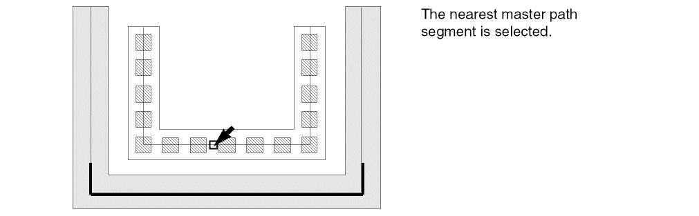
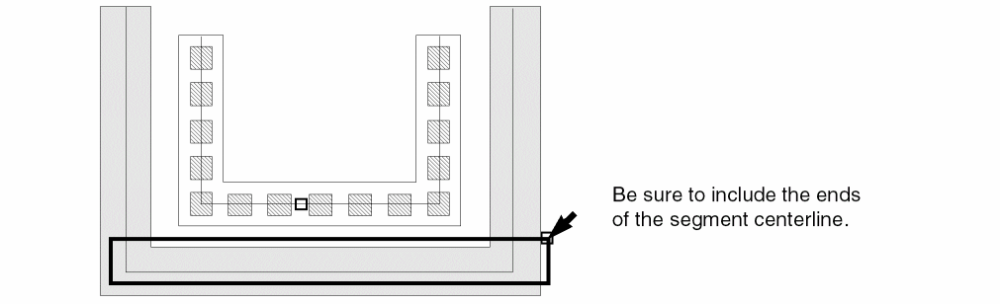
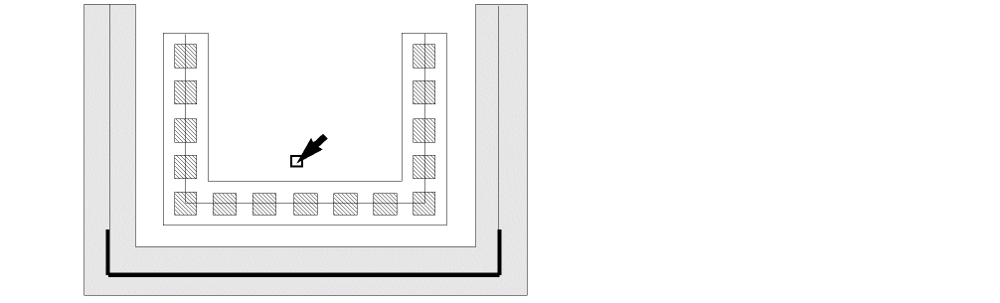
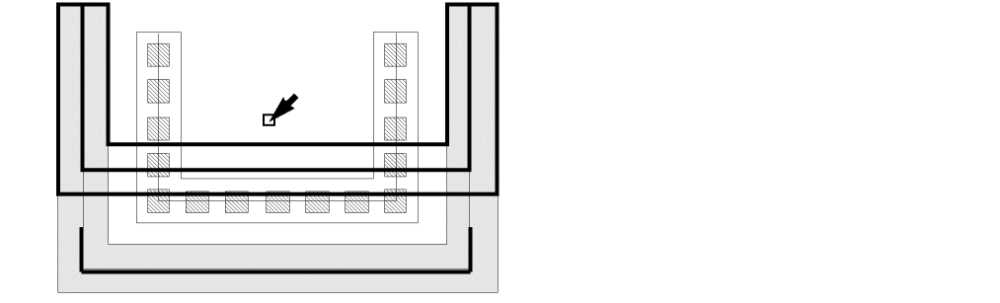
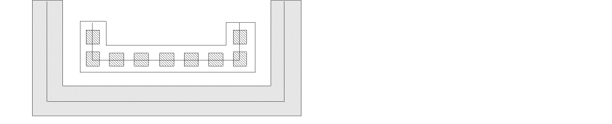

Stretching Multipart Paths
You can stretch the ends, segments, and/or corners of a multipart path in the same way you stretch single-part paths; the master path and its subparts stretch together. You cannot stretch the master path separately from its subparts nor can you stretch subparts, except chopped subpaths, separately from the master path.
If you attempt to stretch a subpart, the system applies the stretch to the whole multipart path. The only exception is that you can stretch the chopped ends of subpaths. When you stretch a chopped subpath, all other chopped subparts are stretched too.
You cannot directly select a set of subrectangles, but selecting and stretching the chopped end of a subpath causes all chopped parts in the multipart path to be regenerated, including chopped sets of subrectangles. The system regenerates subrectangles along orthogonal segments only.
To stretch one segment in a multipart path:
-
In the layout window, choose Edit – Stretch.
Stretch automatically changes to partial selection mode and prompts you to select the object you want to stretch. -
Select the segment you want to stretch by doing one of the following:
-
Click the middle of the centerline of the master path segment or the comparable subpath segment.
-
Create a selection box around the centerline of a segment.
-
Click the middle of the centerline of the master path segment or the comparable subpath segment.
-
If you are prompted for a reference point, click where you want the stretch to begin.
The reference point does not have to be directly on the multipart path.
Stretch prompts you to point to the new location. -
Point to a new location for the stretch.
As you point, an outline of the master path segment shows the new location.
 -
Click to select the new location for the selected multipart path segment.

Related Topics
Stretching Chopped Subpath Ends in Multipart Paths
Return to top